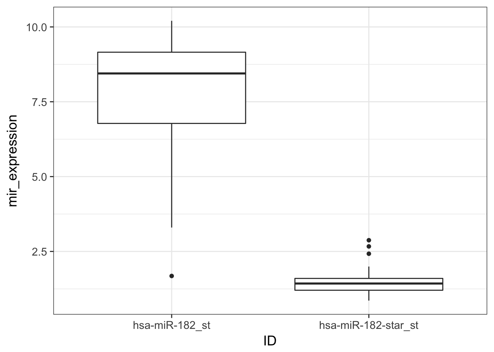
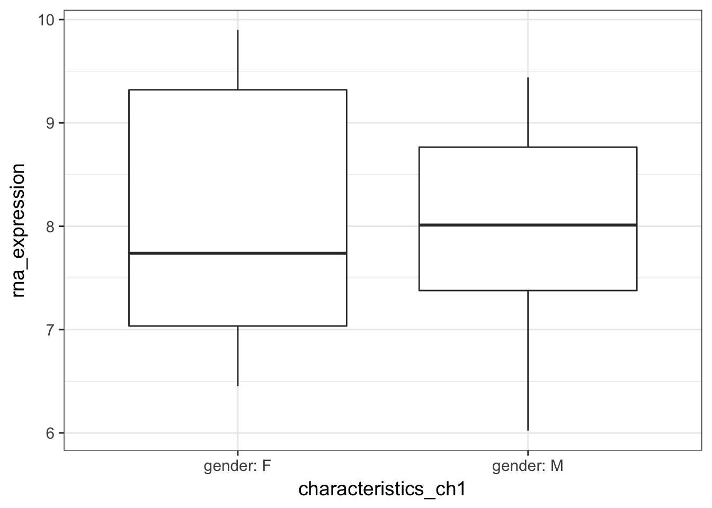
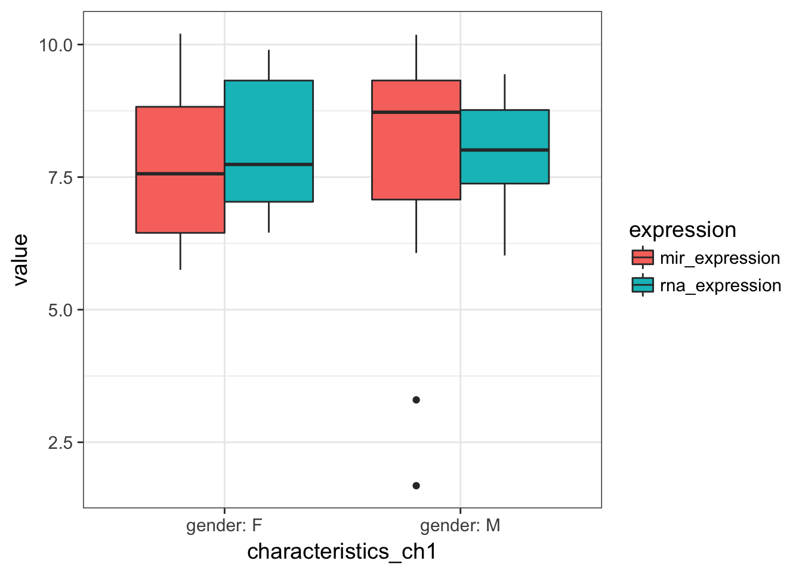
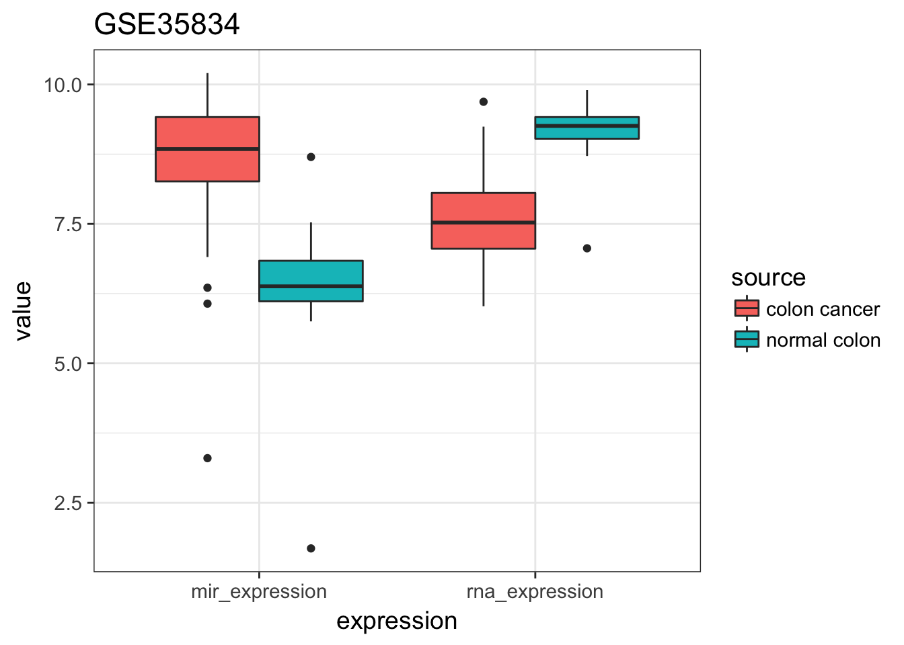
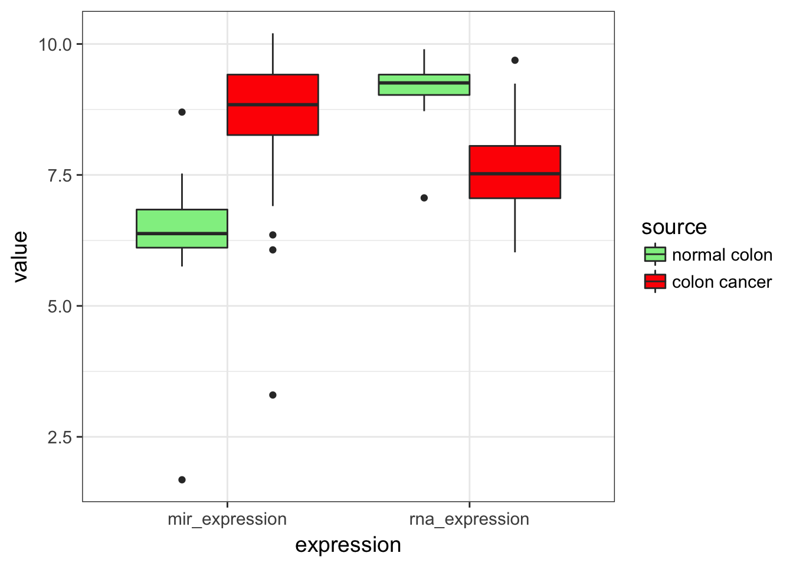
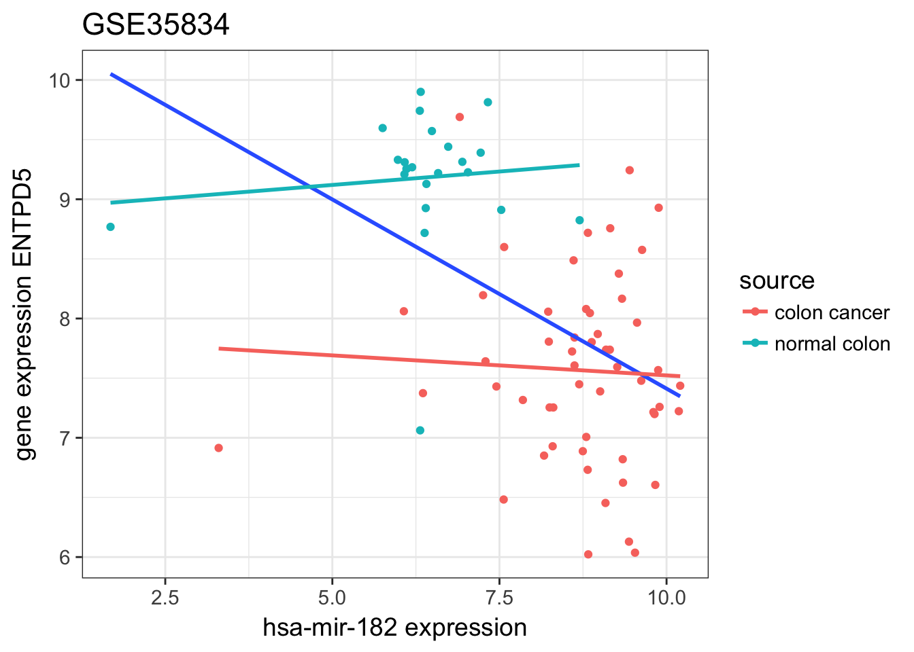
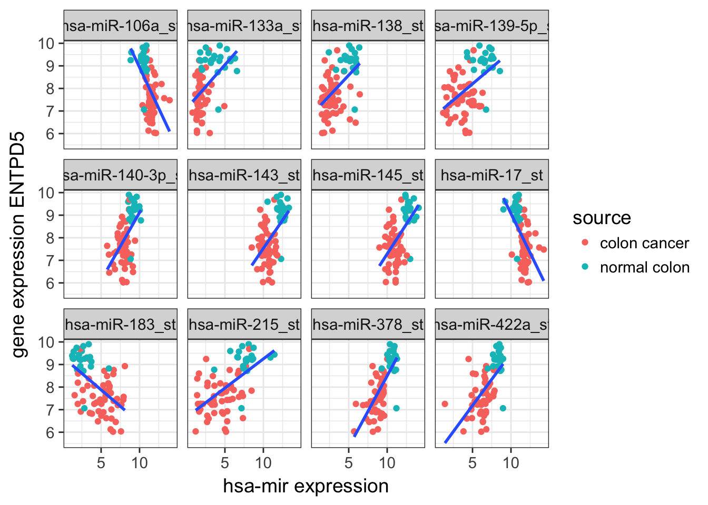

Objective: practice a wrap-up project that encompasses most of the workshop
On your computer, in a folder with a meaningful name, create a new project using the project manager utility on the upper-right part of the rstudio window.
Check if you have all those libraries installed
library("tidyverse")
library("broom")
library("GEOquery")
theme_set(theme_bw(14)) # if you wish to get this theme by defaultAs you already experienced, working with GEO datasets can be a hassle. But it provides also a nice exercise as it requires to manipulate of a lot of tables (data.frame and/or matrix). Here, we will investigate the relationship between the expression of ENTPD5 and mir-182 as it was described by Pizzini et al.. Even if the data are already normalised and should be ready to use, you will see that reproducing the claimed results still requires an extensive amount of work.
The GEO dataset of interest is GSE35834
getGEO functionafter NCBI moved its pages from http to https make sure that to have GEOquery version > 2.39
gse35834 <- getGEO("GSE35834", GSEMatrix = TRUE)## https://ftp.ncbi.nlm.nih.gov/geo/series/GSE35nnn/GSE35834/matrix/## OK## Found 2 file(s)## GSE35834-GPL15236_series_matrix.txt.gz## File stored at:## /var/folders/7x/14cplkhj0fn34yltb3c0j9bczm4jkt/T//RtmpqCFeMq/GPL15236.soft## Warning in read.table(file = file, header = header, sep = sep, quote =
## quote, : not all columns named in 'colClasses' exist## GSE35834-GPL8786_series_matrix.txt.gz## File stored at:## /var/folders/7x/14cplkhj0fn34yltb3c0j9bczm4jkt/T//RtmpqCFeMq/GPL8786.soft## Warning in read.table(file = file, header = header, sep = sep, quote =
## quote, : not all columns named in 'colClasses' existshow(gse35834)## $`GSE35834-GPL15236_series_matrix.txt.gz`
## ExpressionSet (storageMode: lockedEnvironment)
## assayData: 22486 features, 80 samples
## element names: exprs
## protocolData: none
## phenoData
## sampleNames: GSM875933 GSM875934 ... GSM876012 (80 total)
## varLabels: title geo_accession ... data_row_count (39 total)
## varMetadata: labelDescription
## featureData
## featureNames: 10000_at 10001_at ... 9_at (22486 total)
## fvarLabels: ID ENTREZ_GENE_ID Description SPOT_ID
## fvarMetadata: Column Description labelDescription
## experimentData: use 'experimentData(object)'
## Annotation: GPL15236
##
## $`GSE35834-GPL8786_series_matrix.txt.gz`
## ExpressionSet (storageMode: lockedEnvironment)
## assayData: 7815 features, 78 samples
## element names: exprs
## protocolData: none
## phenoData
## sampleNames: GSM875855 GSM875856 ... GSM875932 (78 total)
## varLabels: title geo_accession ... data_row_count (39 total)
## varMetadata: labelDescription
## featureData
## featureNames: 14q-0_st 14qI-1_st ... zma-miR408_st (7815 total)
## fvarLabels: ID miRNA_ID_LIST ... SEQUENCE (11 total)
## fvarMetadata: Column Description labelDescription
## experimentData: use 'experimentData(object)'
## Annotation: GPL8786gse35834?As shown in the Environment tab, it is a list composed of two elements. Each list is also a list with a special class ‘ExpressionSet’.
To help figuring out the ExpressionSet object, see the figure below. Mind that for this project, the list GSE contains 2 ExpressionSets!
according to the GEO webpage:
gse35834?The function show() displays
Thus, gse35834[[1]] is mRNA (22486 probes) gse35834[[2]] is mir (7815 probes)
You can use phenoData() to get informations on samples or pData() to retrieve them directly as a data.frame.
tibble which you will name rna_meta
geo_accession to samplesource_name_ch1 and starting with "charact"rna_meta <- pData(gse35834[[1]]) %>%
as_tibble() %>%
select(sample = geo_accession,
source_name_ch1,
starts_with("charact"))tibble which you will name mir_meta
geo_accession to samplesource_name_ch1 and all starting with “charact”mir_meta <- pData(gse35834[[2]]) %>%
as_tibble() %>%
select(sample = geo_accession,
source_name_ch1,
starts_with("charact"))View(rna_meta) and View(mir_meta). Are the samples GSM* identical?No, they aren’t. This is really annoying as the expression data contain only GSM ids.
We would like to somehow join both informations.
Knowing that both data frames have different sample columns, merge them to get the correspondence between RNA GSM* and mir GSM*. Save the result as rna_mir.
If 2 data.frames that are joined (by specific columns) have identical names in their remaining columns, the default suffixes ‘.x’ and ‘.y’ are appended to the concerned column names from the first and second data frames respectively. However, you can make more friendly suffixes that match your actual data using the suffix = c(".x", ".y") option.
inner_join(rna_meta, mir_meta,
by = c("characteristics_ch1.1", "characteristics_ch1",
"source_name_ch1", "characteristics_ch1.2",
"characteristics_ch1.3", "characteristics_ch1.4",
"characteristics_ch1.5", "characteristics_ch1.6",
"characteristics_ch1.7", "characteristics_ch1.8"),
suffix = c("_rna", "_mir")) -> rna_mir## Warning in inner_join_impl(x, y, by$x, by$y, suffix$x, suffix$y,
## accept_na_match): joining factors with different levels, coercing to
## character vector
## Warning in inner_join_impl(x, y, by$x, by$y, suffix$x, suffix$y,
## accept_na_match): joining factors with different levels, coercing to
## character vector
## Warning in inner_join_impl(x, y, by$x, by$y, suffix$x, suffix$y,
## accept_na_match): joining factors with different levels, coercing to
## character vectorExpression data can be accessed using exprs() which returns a matrix.
If you do not pipe the command to head, R would print ALL rows (or until it reaches max.print).
exprs(gse35834[[1]]) %>% head()GSM*.fData() provides features.fData(gse35834[[1]]) %>% head()Again, we need to merge both informations to assign the expression data to the gene of interest.
the probe ids are the common values
rownames contain the necessary informations. But as a matrix contains, by definition, only a single data type (here numerical values), you will need to transform it to a data.frame and convert the rownames to a column using rownames_to_column(var = "ID").rna_expressionexprs(gse35834[[1]]) %>%
as.data.frame() %>%
rownames_to_column(var = "ID") -> rna_expressionfData(gse35834[[1]])). Save the result as rna_expression (Don’t worry: R is always working on temporary objects and you won’t erase the object you are working on).Warnings about factors being coerced to characters can be ignored.
rna_expression %>%
inner_join(fData(gse35834[[1]])) -> rna_expression## Joining, by = "ID"## Warning in inner_join_impl(x, y, by$x, by$y, suffix$x, suffix$y,
## accept_na_match): joining character vector and factor, coercing into
## character vector957, for Homo sapiens
rna_expression for the gene of interest (ENTPD5) and tidy the samples:sample for all GSM* and a column rna_expression containing the expression values. Save the result as rna_expression_melt. At this point you should get a tibble of 80 values.rna_expression %>%
filter(ENTREZ_GENE_ID == 957) %>%
gather(sample, rna_expression, starts_with("GSM")) -> rna_expression_meltID, SPOT_ID and sample_mir. Save the result as rna_expression_melt.rna_expression_melt %>%
inner_join(rna_mir, by = c("sample" = "sample_rna")) %>%
select(-ID, -SPOT_ID, -sample_mir) -> rna_expression_melt## Warning in inner_join_impl(x, y, by$x, by$y, suffix$x, suffix$y,
## accept_na_match): joining character vector and factor, coercing into
## character vectorexprs(gse35834[[2]]) for the mir_expression. This time, the mir names are nicely provided by fData(gse35834[[2]]) in the column miRNA_ID_LIST.exprs(gse35834[[2]]) %>%
as.data.frame() %>%
rownames_to_column(var = "ID") %>%
# match expression data to platform annotation
inner_join(fData(gse35834[[2]])) %>%
gather(sample, mir_expression, starts_with("GSM")) %>% # melt patients
filter(miRNA_ID_LIST == "hsa-mir-182") -> mir_expression_melt## Joining, by = "ID"## Warning in inner_join_impl(x, y, by$x, by$y, suffix$x, suffix$y,
## accept_na_match): joining character vector and factor, coercing into
## character vector78 samples for the mir experiment, so we would expect 78 but we are obtaining twice this number.
expression by IDThe mir array contains probes for both strands of mir:
mir_expression_melt %>%
ggplot(aes(x = ID, y = mir_expression)) +
geom_boxplot()
The immature mir, named star is indeed merely expressed
grepl in the filter function.adding ! to a condition means NOT. Example filter(iris, !grepl("a", Species)): remove all Species containing the letter “a”.
mir_expression_melt %>%
filter(!grepl("star", ID)) -> mir_expression_meltsample_rna after joining.mir_expression_melt %>%
inner_join(rna_mir, by = c("sample" = "sample_mir")) %>%
select(-sample_rna) -> mir_expression_melt## Warning in inner_join_impl(x, y, by$x, by$y, suffix$x, suffix$y,
## accept_na_match): joining character vector and factor, coercing into
## character vector77 rows, we lost GSM875854, which is not present in the meta-data nor the GSE description. Let it down
Join rna_expression_melt and mir_expression_melt by their common columns EXCEPT sample. Save the result as expression.
expression <- inner_join(rna_expression_melt, mir_expression_melt,
by = c("source_name_ch1", "characteristics_ch1",
"characteristics_ch1.1", "characteristics_ch1.2",
"characteristics_ch1.3", "characteristics_ch1.4",
"characteristics_ch1.5", "characteristics_ch1.6",
"characteristics_ch1.7", "characteristics_ch1.8"))expression %>%
ggplot(aes(y = rna_expression, x = characteristics_ch1)) +
geom_boxplot()
no relation to gender
You will need to tidy by gathering rna and mir expression
expression %>%
gather(expression, value, ends_with("expression")) %>%
ggplot(aes(y = value, x = characteristics_ch1, fill = expression)) +
geom_boxplot()
no relation to gender for both expressions
separate(expression, source_name_ch1, c("source", "rest"), sep = 12) to get source as control / cancer. Is there any difference?expression %>%
gather(expression, value, ends_with("expression")) %>%
separate(source_name_ch1, c("source", "rest"), sep = 12) %>%
ggplot(aes(y = value, fill = source, x = expression)) +
geom_boxplot() + ggtitle("GSE35834")
Like it is stated in the summary of the study, the expression of mir-182 seems indeed higher in cancer while the ENTPD5 expression seems lower.
scale_fill_manual().expression %>%
gather(expression, value, ends_with("expression")) %>%
separate(source_name_ch1, c("source", "rest"), sep = 12) %>%
mutate(source = factor(source, levels = c("normal colon", "colon cancer"))) %>%
ggplot(aes(y = value, fill = source, x = expression)) +
geom_boxplot() +
scale_fill_manual(values = c("lightgreen", "red"))
geom_smooth() for all data + per sourceexpression %>%
separate(source_name_ch1, c("source", "rest"), sep = 12) %>%
ggplot(aes(x = mir_expression, y = rna_expression)) +
geom_point(aes(colour = source)) +
geom_smooth(method = "lm", se = FALSE) +
geom_smooth(aes(colour = source), method = "lm", se = FALSE) +
labs(y = "gene expression ENTPD5",
x = "hsa-mir-182 expression") +
ggtitle("GSE35834")
the two dot clouds between normal and cancer origin do split by
but the trend is not so clear
lm() as lists. Since data.frame are much easier to work with, David Robinson developed broom.library("broom")
expression %>%
separate(source_name_ch1, c("source", "rest"), sep = 12) %>%
group_by(source) %>%
do(tidy(lm(rna_expression ~ mir_expression, data = .))) %>%
filter(term != "(Intercept)")## Source: local data frame [2 x 6]
## Groups: source [2]
##
## source term estimate std.error statistic p.value
## <chr> <chr> <dbl> <dbl> <dbl> <dbl>
## 1 colon cancer mir_expression -0.03354124 0.09217281 -0.3638951 0.7174117
## 2 normal colon mir_expression 0.04496954 0.10042656 0.4477853 0.6588934The estimate of the intercept is not meaningful thus it is filtered out. One can easily see that the slope is not significant when data are slipped by source.
expression %>%
do(tidy(lm(rna_expression ~ mir_expression, data = .))) %>%
filter(term != "(Intercept)")## term estimate std.error statistic p.value
## 1 mir_expression -0.3172285 0.06592259 -4.812137 7.545623e-06with a pvalue of 7.54e-6, the negative is highly significant
tidy by glance to extract the \(r^2\). Is this value satisfactory?expression %>%
do(glance(lm(rna_expression ~ mir_expression, data = .)))## r.squared adj.r.squared sigma statistic p.value df logLik
## 1 0.2359153 0.2257275 0.9136575 23.15666 7.545623e-06 2 -101.292
## AIC BIC deviance df.residual
## 1 208.584 215.6154 62.60775 75with a r^2 of 0.236, i.e only 23.6% of the variance explained, a linear fit sounds bad due to outliers
hsa-mir, which are not star, are present on the array GPL8786fData(gse35834[[2]]) %>%
filter(grepl("^hsa", ID)) %>%
filter(!grepl("star", ID)) %>%
nrow()## [1] 677all_mir_rna_expressionexprs(gse35834[[2]]) %>%
as.data.frame() %>%
rownames_to_column(var = "ID") %>%
filter(grepl("^hsa", ID)) %>%
# match expression data to platform annotation
gather(sample, mir_expression, starts_with("GSM")) %>%
filter(!grepl("star", ID)) %>%
inner_join(fData(gse35834[[2]])) %>%
inner_join(rna_mir, by = c("sample" = "sample_mir")) %>%
select(-sample_rna) %>%
inner_join(rna_expression_melt,
by = c("source_name_ch1", "characteristics_ch1",
"characteristics_ch1.1", "characteristics_ch1.2",
"characteristics_ch1.3", "characteristics_ch1.4",
"characteristics_ch1.5", "characteristics_ch1.6",
"characteristics_ch1.7", "characteristics_ch1.8"),
suffix = c("_mir", "_rna")) -> all_mir_rna_expression ## Joining, by = "ID"## Warning in inner_join_impl(x, y, by$x, by$y, suffix$x, suffix$y,
## accept_na_match): joining character vector and factor, coercing into
## character vector
## Warning in inner_join_impl(x, y, by$x, by$y, suffix$x, suffix$y,
## accept_na_match): joining character vector and factor, coercing into
## character vectoradj.r.squaredall_mir_rna_expression %>%
group_by(ID) %>%
do(glance(lm(rna_expression ~ mir_expression, data = .))) %>%
ungroup() %>%
arrange(desc(adj.r.squared))## # A tibble: 677 × 12
## ID r.squared adj.r.squared sigma statistic
## <chr> <dbl> <dbl> <dbl> <dbl>
## 1 hsa-miR-378_st 0.5337446 0.5275279 0.7137146 85.85605
## 2 hsa-miR-422a_st 0.3880594 0.3799002 0.8176497 47.56092
## 3 hsa-miR-215_st 0.3649550 0.3564878 0.8329423 43.10187
## 4 hsa-miR-145_st 0.3239984 0.3149851 0.8593825 35.94649
## 5 hsa-miR-183_st 0.3066374 0.2973925 0.8703479 33.16851
## 6 hsa-miR-17_st 0.2964648 0.2870843 0.8767093 31.60447
## 7 hsa-miR-106a_st 0.2875369 0.2780374 0.8822545 30.26861
## 8 hsa-miR-140-3p_st 0.2812168 0.2716330 0.8861589 29.34301
## 9 hsa-miR-138_st 0.2693901 0.2596486 0.8934195 27.65396
## 10 hsa-miR-139-5p_st 0.2689871 0.2592402 0.8936659 27.59736
## # ... with 667 more rows, and 7 more variables: p.value <dbl>, df <int>,
## # logLik <dbl>, AIC <dbl>, BIC <dbl>, deviance <dbl>, df.residual <int>top12_mir <- all_mir_rna_expression %>%
group_by(ID) %>%
do(glance(lm(rna_expression ~ mir_expression, data = .))) %>%
ungroup() %>%
arrange(desc(adj.r.squared)) %>%
head(12) %>%
.$ID
all_mir_rna_expression %>%
filter(ID %in% top12_mir) %>%
separate(source_name_ch1, c("source", "rest"), sep = 12) %>%
ggplot(aes(x = mir_expression, y = rna_expression)) +
geom_point(aes(colour = source)) +
geom_smooth(method = "lm", se = FALSE) +
facet_wrap(~ ID, ncol = 4) +
labs(y = "gene expression ENTPD5",
x = "hsa-mir expression")